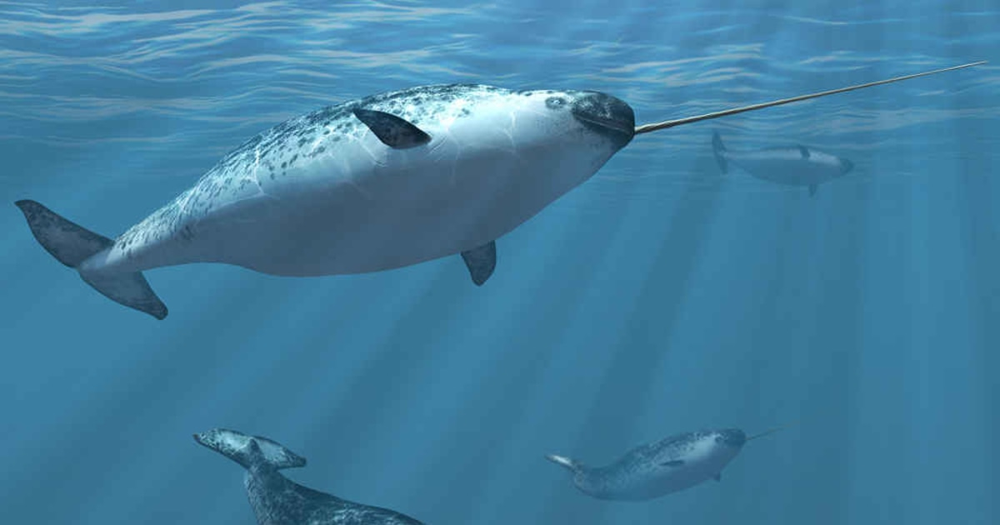

For many years the question of "What are the foraging habbits of Narhwals" and more generally other such mamals, has baffled scientests for many years.
Due to the complexities of their natural habitat and natural hunting behaviors, it is incredibly difficult to identify and monitor these foraging habits.
Not only would understanding the hunting and foraging habits of Narwhals allow marine bioligists and conservators to better protect Narwhals it will also
change the ways in which other marine mamals are studdied and protected too. Mathematicians and Computer Scientests at the university of Copenhagen have
developed an algorithm to answer just that question, "What are the foraging habbits of Narhwals".

Image of four Narwhals swimming. Credit:
Shutterstock
Like many species, global warming and its subsequent impacts are having a serious detromental effect to the life of the Narwhal.
In the case of the Narwhal, the rising sea levels caused by the melting ice caps as well as the warmer waters has led to a subsequent
increase in arctic shipping traffic. This disturbance to the natural habitats and behaviors of the narwhals could have catastroptic consequences
so it is vital as a society and a community of scientests that we endevour to learn about and preserve the narwhal and it's natural enviroment.
One way in which we can do this is through the monitoring of their foraging behaviour and any potential impacts caused by human activities.
However this poses its own challenges due to the nature of the narwhals natural habitats. The remote, isolated location of the arctic regions
and the depths of up to 1,000 metres at which they hunt make monitoring and tracking any foraging habbits very difficult.
Artificial intelligence is, as described in the dictionary, is "The theory and development of computer systems able to perform tasks normally
requiring human intelligence, such as visual perception, speech recognition, decision-making and translation between languages. Although AI is
most commonly used in comerce, logistics and optimising products, but may now be the key to understandig the foraging habbits of narwhals.
Mathematicians, Computer Scientests and Marine Biologists from the University of Copenhagen and the Greenland Institute of Natural Resources
have collaberated to urilise the relationship between algorithms and Artificial intelligence to demonstrate how the two can be used to map the
foraging habits of the Narwhals and thus allow biologists to better care for them."
Without having the insight into where the Narwhals hunt for food, they are at risk of being disturbed by increased sea traffic due to the receding
sea ice. Previous to this algorithm, it was very difficult to gather data on the movement of the Narwhals due to the harsh conditions and depths
at which they hunt at. The most common method used was to attach measuring instruments to the bodies of the Narwhals in order to collect acoustic data.
Narwhals use echolocation, the use of clicking sounds to communiate, and familiarise themselves with their enviromnent. For the most part the sound
of the Narwhals are repeated clicks however when they begin to hunt, the clicks get closer together eventually resulting in a buzzing sounnd detected
by the recording devices. Although this method of tracking is effective in other animals, in the case of the Narwhal, it is impossible to collect data
in many of the places in which they hunt, and if data can be collected, the recording devices are insensitive and require high amounts of time consuming
manual analysis.
In response to the anaylysis of the changes in noises as the Narwhals begin to hunt, scientests began to investigate the link between these sounds and the
movements of the Narhwals, through the use of artificial intelligence. Scientests used deep learning, a specalised, intense type of machine learning in order
to recognize and associate movement patterns with the buzzing sounds. The data collected could then be analyzed through the algorithm, which was trained
using large qunatities of pre-collected data.
In order for the artificial intelligence algorithm to be sufficiently "trained", large quantities of relevent data must first be passed through the algorithm,
allowing the algorithm to spot patterns and links between the buzzing sounds and whale movements as part of the machine learnig process. In order to collect
these large amounts of data needed for effective machine learning, the research team involved in the study attached devices to the backs of 5 Narwhals in
Scoresby Sund fjord in East Greenland, which were designed to fall off after 5-8 days, and would be collected later by fishermen. Despite the big challenge
of the very complex movement patterns of the whales, making analysis more challenging, the use of these trackers, alongside machine learning and algorithms
has allowed scientists to gain a better understanding of the Narwhal foraging habits.
With climate change and its effects only set to worsen in the coming years, development of this algorithm for use on Narhwals and potentially other animals in
the future is paramount. Following on from the success of this investigation researchers hope that in the future they would be able to rely on measurements of
animal movements via an accelerometer. Alongside this technique of data collection, scientists hope to use temperature pills to detect temperature drops in
the stomachs of the Narwhals as they consume their food, which will help to distinguish the variations of buzzing sounds leading to a catch.
Researchers are tagging a narwhal in East Greeenland. Credit: Carsten Egevang
Just one way in which computer science is having a positive impact on society. Click
here
for more on the foraging habits of narwhals.